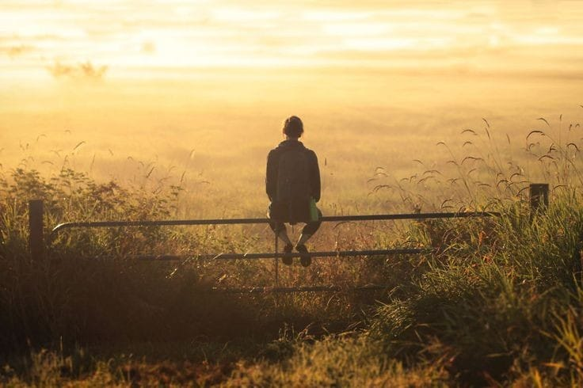

Personal

nama saya Rezky Aditya. Saya lahir dan besar di kota Medan. Sejak kecil, saya selalu tertarik dengan dunia pemrograman. Dulu, saya sering menghabiskan waktu untuk menonton video tutorial coding saya saat ini tengah duduk di bangku SMK Dengan jurusan RPL
Pendidikan

Pendidikan Formal
Pengalaman
Bagi saya pengalaman semasa sekolah sangat penting untuk menambah skill dan mengasah kemampuan saya. Berikut ada beberapa pengalaman yang saya dapat dari semasa Sekolah saya
SMP Al Washliyah

Selama tiga tahun di SMP, saya mengalami banyak perubahan. Saya menjadi lebih mandiri, bertanggung jawab, dan berani untuk mencoba hal-hal baru. Saya juga belajar untuk menghargai perbedaan pendapat dan bekerja sama dengan orang-orang yang berbeda latar belakang. Salah satu pengalaman yang paling berharga adalah yaitu mendapatkan nilai bahasa inggris tertinggi di kelas . Dari pengalaman itu, saya belajar bahwa kita harus serius buat belajar.Dan juga masa SMP adalah masa di mana saya bertemu dengan banyak teman baru. Kami bersama-sama melewati suka dan duka. Persahabatan yang terjalin selama di SMP sangat berharga bagi saya. Salah satu kenangan terindah adalah Merayakan Tahun Baru Bersama. Persahabatan yang saya bangun di SMP akan selalu saya kenang
SMKN 9 Medan

Selama masa SMK di jurusan RPL SMKN 9, saya terlibat dalam banyak proyek menarik. Salah satu yang paling berkesan adalah saat kami ditugaskan untuk membuat website weeding. Kami belajar banyak hal baru, mulai dari perancangan antarmuka, pemrograman, hingga deployment. Proses pengerjaannya memang cukup menantang, tapi rasa puas yang saya dapatkan saat aplikasi berhasil berjalan sangat luar biasa. Dari proyek ini, saya belajar tentang pentingnya kerja sama tim, manajemen waktu, dan problem-solving.
Contact
Untuk Mengenal Lebih Lanjut dengan saya dapat dihubungi pada akun media sosial berikut ini :